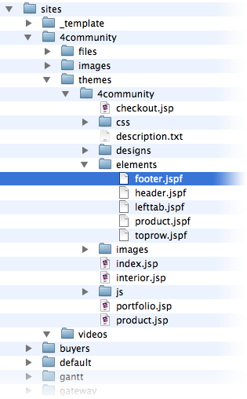

Themes
- Setup
- Cutting a theme layout
- Including theme snippets
- Registering a theme
- Testing your theme
- Iterating with designers
- Adding logic
A theme is a collection of static html files (layouts) that have been adapted to allow Sutra CMS to fill with dynamic content. Each page of a website requires a theme layout to provide the “view” of the page.
Theme layouts start off as static html files. These files can be custom built by designers for your website or chosen from among the many available themes on the web. A complete theme typically includes several html files for various layout options and all of the resources—images, css and javascript—that go into making the theme layouts look and behave as intended.
The process of adapting a theme for Sutra CMS is quite simple. Because it requires few modifications to the original static html files, the design process can easily be iterated on while a site is in development (and even in production).
The theme abstraction allows designers to do what they do best—without impeding the efforts of programmers and content experts.
Setup
Drop the folder containing your theme into the themes directory of your site. It is probably best that the name of your theme folder doesn’t contain any spaces or weird characters.
Create a text file (not an rtf file!) in your theme folder with the name of description.txt. Put the name of the theme in the first line and the theme description in the following lines. Sutra CMS will not recognize your theme without this file as it contains the theme meta data that Sutra CMS needs when registering your theme.
Cutting a theme layout
We typically use the phrase “cutting a theme” to denote converting static html into files that Sutra CMS can use.
Apply the following steps for each static html file you want to convert.
1. Start by testing your static html by opening in a browser as a file:
file:///Applications/Servoy/application_server/server/webapps/ROOT/sutraCMS/sites/site_directory/themes/theme_directory/index.html
And then with Servoy running, test again as an http request:
http://localhost:8080/sutraCMS/sites/site_directory/themes/theme_directory/index.html
2. Change the extension from html to jsp and test again:
http://localhost:8080/sutraCMS/sites/site_directory/themes/theme_directory/index.jsp
3. Add the following code snippet to very top of the page before
anything else:
<%@ page import = "java.util.*" %>
<% HashMap pageData = (HashMap)request.getAttribute("pageData");%>
4. Insert following resource prefix for all resource calls (src, href, hrf, @import url, etc):
<%=(String)request.getAttribute("themeDirectory")%>
For example, this code:
<link rel="stylesheet" type="text/css" href="css/style.css" />
<script src="js/jquery.bxSlider.js" type="text/javascript"></script>
<img src="images/contactme.png" alt="" class="contactme" />
becomes:
<link rel="stylesheet" type="text/css" href="<%=(String)request.getAttribute("themeDirectory")%>/css/style.css" />
<script src="js/jquery.bxSlider.js" type="<%=(String)request.getAttribute("themeDirectory")%>/text/javascript"></script>
<img src="<%=(String)request.getAttribute("themeDirectory")%>/images/contactme.png" alt="" class="contactme" />
Including theme snippets
Theme snippets allows you to reuse theme code in more than one theme layout file. Headers, footers, navigations, etc — are useful sections to be coded as theme snippets.
Theme snippets are files that are located in the elements directory in
your theme directory. By convention, these files are given the extension
of .jspf.
The following code will include the named snippet file into a theme layout file:
<%@ include file="elements/footer.jspf" %>

Registering a theme
Registering a theme is done on the “Themes” page of Sutra CMS. The “+” button at the bottom of the themes list gives you a list of all the available themes in your sites theme directory.
If your theme isn’t listed, make sure that you created the
description.txt file correctly and the Directory data point is
pointing to the right folder.
The action of registering a theme creates meta data representing your various theme layouts and editable areas on those layouts. You can assign default blocks to editable areas which will be pulled in automatically when new pages are created.
Testing your theme
Once your theme is registered, create a page for each of your theme layouts!
Iterating with designers
Sutra CMS comes with a number of actions that greatly simplify iterating with designers on your theme.
- If you change anything in your theme—create a new theme layout file, add an editable area, etc—“refresh” the theme with the action on the action wheel at the bottom of the theme list.
Your default block settings will not be overwritten by this action unless of course an editable area or theme layout has been deleted entirely.
Under the action wheel of the pages sitemap there is a “refresh” action for pages to update any pages that use an older version of a theme layout. You can choose to reset page data to the theme layout defaults or keep current page data. The latter option will keep page data for editable areas that have the same name.
You can also trigger this page refresh for all pages a theme is used on via the “refresh all pages” action. This action is found under the themes page > pages used on > action wheel.

Adding logic
Even though theme layouts are jsp files, it is not recommended that you add logic directly in your theme layouts. Disadvantages:
- managing code requires a separate system than Servoy
- iterating with designers is more difficult
- need to figure out how to debug
Instead, keep your theme layouts as “dumb” as possible and do all your logic server-side in Servoy.
The standard way for this is to add blocks to editables areas. But what if you want the same logic for every page using a theme layout? Easy approach is to add a scrapbook block as a default to a theme editable area. Every time a page is created with that theme layout, that block is brought in automatically.
A less meta data driven approach would be to code an AJAX call (see AJAX documentation) into your theme layout file that fills in a section of your template with markup returned from the server when a page loads. This is a useful approach when creating themes to distribute and you want the least amount of configuration hassles.
Finally—having said all this—there are probably use cases where coding at the jsp level could be the easiest way to go. Integrating legacy jsp applications, servlets and beans comes to mind.